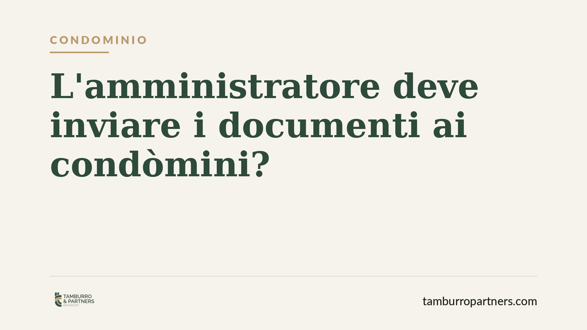

L'amministratore deve inviare i documenti ai condòmini?
Un condòmino può pretendere che l'amministratore gli spedisca a casa fatture, contratti e giustificativi di spesa? Il Tribunale di Roma, con una pronuncia del 2025, offre una risposta netta: il diritto di accesso alla documentazione condominiale esiste, ma si esercita mediante consultazione, non tramite invio. Distinzione tecnica, ricadute pratiche concrete per chi amministra e per chi vive in condominio.

Il caso e il principio affermato
La questione è ricorrente nella vita condominiale: il singolo proprietario chiede all'amministratore copia dei documenti di gestione — fatture dei fornitori, contratti di manutenzione, estratti conto — e pretende che gli vengano recapitati. Di fronte al rifiuto o al silenzio, la controversia arriva davanti al giudice.
Il Tribunale di Roma, con provvedimento del luglio 2025, ha ribadito un orientamento ormai consolidato: l'amministratore non è obbligato a spedire la documentazione ai condòmini. Il suo dovere è diverso e più circoscritto: garantire che il condòmino possa prenderne visione, presso l'ufficio dell'amministratore o in altro luogo concordato.
Inquadramento normativo
Il diritto del condòmino a controllare la gestione trova fondamento negli artt. 1129, 1130 e 1130-bis del codice civile.
L'art. 1130-bis c.c., introdotto dalla riforma del 2012, disciplina il rendiconto condominiale e stabilisce che i condòmini e i titolari di diritti reali o di godimento sulle unità immobiliari possono prendere visione dei documenti giustificativi di spesa in ogni tempo ed estrarne copia a proprie spese.
La formula normativa è precisa. La legge parla di "prendere visione" ed "estrarre copia": non impone all'amministratore l'onere di trasmettere fisicamente gli atti. Il diritto ha natura di accesso, non di ricezione a domicilio. Le spese di riproduzione, inoltre, restano a carico del condòmino richiedente, non del condominio.
L'art. 1129 c.c. rafforza il quadro individuando tra i doveri dell'amministratore la trasparenza gestionale e la conservazione della documentazione, il cui deposito abusivo o la cui mancata esibizione possono integrare grave irregolarità e giustificare la revoca giudiziale.
Cosa cambia in concreto
Per i condòmini: il diritto di controllo è pieno, ma va esercitato con modalità corrette. Non si può imporre all'amministratore di digitalizzare, imbustare e spedire l'intero archivio. Occorre invece formulare una richiesta chiara, individuando i documenti e proponendo un momento per la consultazione.
Per l'amministratore: l'obbligo è di disponibilità e collaborazione. Non basta rifiutarsi genericamente. Deve consentire l'accesso in tempi ragionevoli, in orari compatibili, senza opporre ostacoli pretestuosi. Un rifiuto ingiustificato o dilazioni sistematiche possono esporlo a responsabilità e, nei casi gravi, alla revoca.
La pronuncia romana non introduce un principio nuovo, ma consolida un equilibrio: tutela il diritto di controllo del condòmino e, al tempo stesso, evita che l'amministratore sia gravato da adempimenti sproporzionati o strumentali.
Resta salvo il potere dell'assemblea di regolamentare le modalità di accesso: il regolamento condominiale può prevedere procedure specifiche — ad esempio la richiesta scritta con preavviso — purché non svuotino il diritto di sostanza.
Cosa fare in concreto
- Condòmino: formula la richiesta per iscritto (PEC o raccomandata), indicando con precisione i documenti da consultare e proponendo una o più date per la visione.
- Condòmino: se intendi estrarre copie, mettilo in conto: le spese di riproduzione sono a tuo carico e vanno anticipate o rimborsate.
- Amministratore: rispondi sempre alle istanze di accesso, fissando un appuntamento in tempi congrui; conserva traccia scritta della disponibilità offerta.
- Amministratore: valuta di predisporre un archivio ordinato o un'area digitale di consultazione, così da agevolare l'accesso e ridurre il contenzioso.
- Entrambi: verificate se il regolamento condominiale disciplina già le modalità di consultazione, per evitare richieste o rifiuti fuori procedura.
La consultazione della documentazione è uno strumento di trasparenza, non un'arma di pressione. Gestita con correttezza da entrambe le parti, previene la gran parte dei conflitti che arrivano in tribunale.
---
Contributo informativo a cura di Tamburro & Partners - Avv. Giuseppe Tamburro. Non costituisce parere legale.
Ogni condominio ha una storia a sé.
Se gestisci un'amministrazione e vuoi un confronto su una specifica questione condominiale, scrivi allo studio. Ti rispondiamo entro un giorno lavorativo.